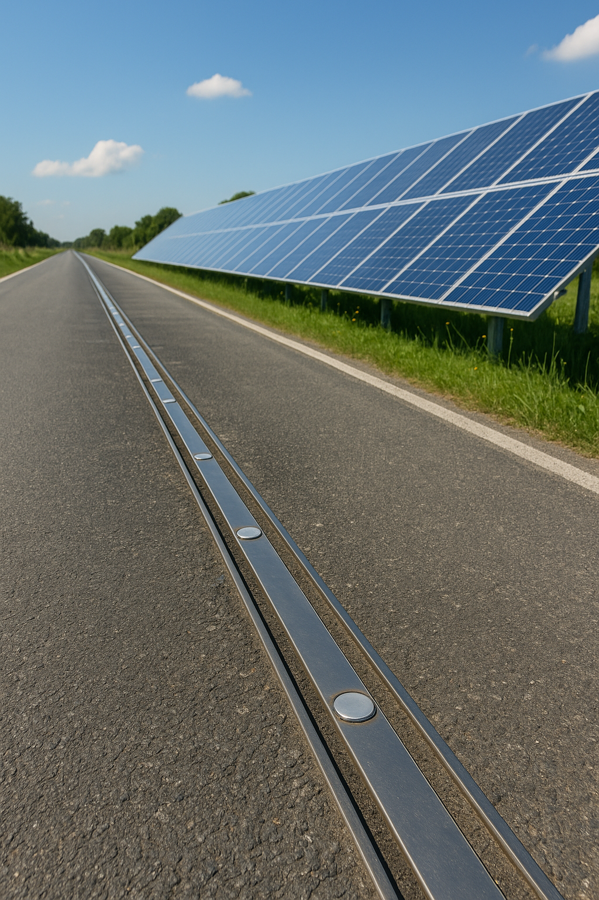
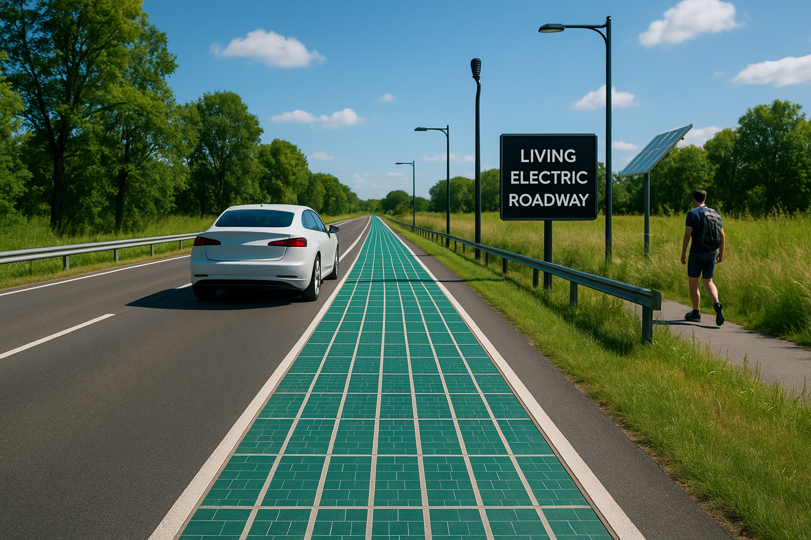
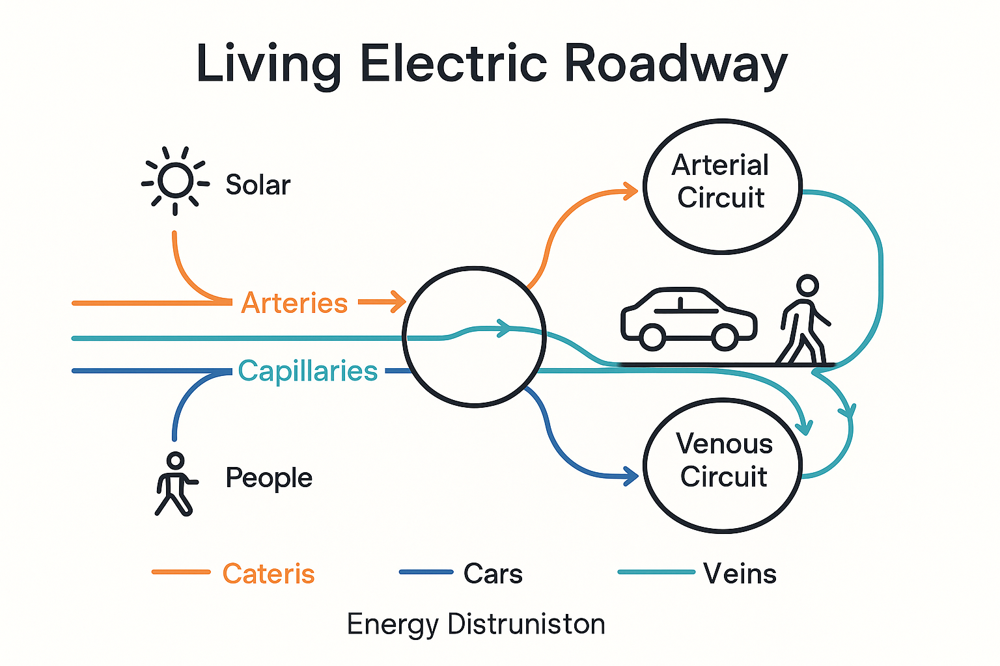

This is a ready-to-print page
The living electric roadway
The Living Electric Roadway is a speculative concept project exploring how civic infrastructure could behave more like a living system. It imagines roads, pathways, and connected public spaces as active participants in energy generation, storage, and redistribution rather than passive surfaces we simply travel across.
The idea comes from observing nature, movement, and the hidden systems that keep living organisms in balance. In this concept, infrastructure becomes responsive, regenerative, and intelligent, quietly supporting the people who use it every day while contributing to a wider energy ecosystem.
The challenge
The challenge was to imagine a closed-loop energy system that could operate on a fixed input, replenish itself through internal regenerative sources, and respond dynamically when pressure appears elsewhere in the network. Rather than relying on a single static power source, the concept needed to show how infrastructure might continuously gather, store, and redirect energy in a resilient way.
It also needed to feel believable from a user-experience perspective. The project was not only about energy engineering, but about how citizens, emergency services, and electric vehicle users might understand and interact with such a system. The challenge was to make something technically ambitious still feel calm, useful, and intuitive in everyday life.


My role
My role in this concept project was to originate the idea, define its vision, and begin shaping it as both a system and a user experience. I approached it not just as an invention, but as a service ecosystem connecting infrastructure, mobility, energy flows, and public-facing information.
I explored how the project could behave like a living organism. In the scenario, when a power outage affects a nearby neighbourhood, the road responds like a body protecting itself. Energy is rerouted through a self-regulating microgrid, drawing reserve power from multiple internal sources and prioritising the areas that need it most.
Process and approach
The process began with a simple but vivid idea: people walking, cycling, and driving along a road without realising that the infrastructure beneath them is participating in a wider intelligent energy system. From there, the concept evolved into a closed live circuit that uses energy, retains value within the system, and replenishes itself through regenerative inputs.
In this concept, the ElectroFlow Circuit gathers reserve energy from three key sources:
- Kinetic energy generated by vehicles and pedestrian movement through pressure-sensitive tiles and road coils.
- Solar energy collected through panels embedded in road dividers and rooftops.
- Residual charge captured from EVs as they decelerate or brake.
The user-facing experience was also an important part of the concept. Through an app or public display panels, people could see:
- Live energy levels of each road segment.
- Areas currently donating or receiving power.
- Suggestions for energy-saving routes.
- Optimal times for electric vehicle charging.
The system also communicates with emergency services so that vital energy routes can be prioritised during disruptions. The overall ambition is for the experience to feel smooth and uninterrupted for citizens, while beneath the surface the infrastructure behaves as a responsive, resilient energy organism.

My contribution
My contribution was to imagine and articulate a future-facing concept where design, technology, and civic infrastructure are treated as one connected system. Rather than focusing only on the physical road, I explored the invisible experience around it: how energy moves, how the system responds under pressure, and how users might understand its behaviour through clear, meaningful interfaces.
This project reflects the kind of work that gives purpose to design for me. It turns observation, imagination, and systems thinking into something that could one day have practical social impact. It is also an invitation to collaboration. If the idea sparks something in others, I would love to see it developed further together.